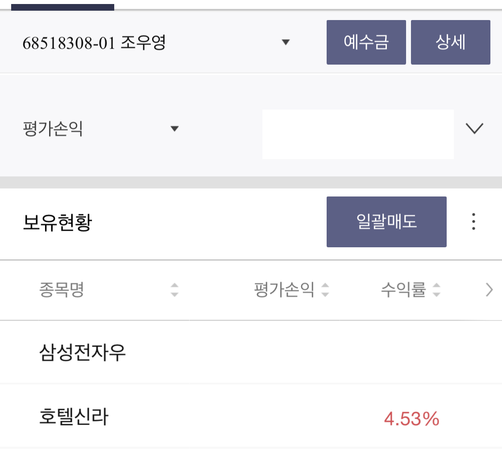

"헐 너 주식해? 그러다가 패가망신당한다?!"
.
.
.
아..알아서할게ㅜ
정확히36743번째 듣는 반응, 다행히 요즘은 이런 얘기가 비교적 줄어든것 같지만 주식을 처음 시작했던 2년 전에는 귀에 딱지않게 듣던 얘기이다. 놀라울 정도로 토씨하나 다르지 않은 ‘oo한다던데?!’ 솔직히 지긋지긋했다. 주식이 도박이 아닌 이유는 많은 이들이 친절하게 설명하고 있으니 유튜브를 참고하자! 그리고 사실 내돈 내가 잃겠다는데 그만 걱정해주면 좋겠다!
정확히36743번째 듣는 반응, 다행히 요즘은 이런 얘기가 비교적 줄어든것 같지만 주식을 처음 시작했던 2년 전에는 귀에 딱지않게 듣던 얘기이다. 놀라울 정도로 토씨하나 다르지 않은 ‘oo한다던데?!’ 솔직히 지긋지긋했다. 주식이 도박이 아닌 이유는 많은 이들이 친절하게 설명하고 있으니 유튜브를 참고하자! 그리고 사실 내돈 내가 잃겠다는데 그만 걱정해주면 좋겠다!
(두둥탁)시가총액 1위! 무려 500조원! 여느 주린이와 다름없이 삼전(삼성전자)을 사면 실패하지 않는다는 삼성불패를 따라 생각없이 첫 매수를 했고, 그 말은 나름 합리적인 카더라 였음을 눈으로 확인중이다. 뿌듯..(약 2년전 매수 기준 주의)

어느날 가만히 내 책상을 보아하니 내가 애플에 쓴 돈이 대략 $$$,$$$,$$원, 전세계에 나같은 앱등이가 5억명은 있을텐데 그럼 이 회사 얼마를 버는거지? 괜찮은데..?
코로나때 몰락한 사업들이 뭐가있더라... 흠, 여행,항공,호텔,면세,외식 오프라인? 그렇다면 코로나의 끝이 (조금)보이는 지금 예측할수 있는 유망한 종목은…!? OO신라, O세계, OO투어, OO항공..? 
혹시 나 주식 천잰가..?